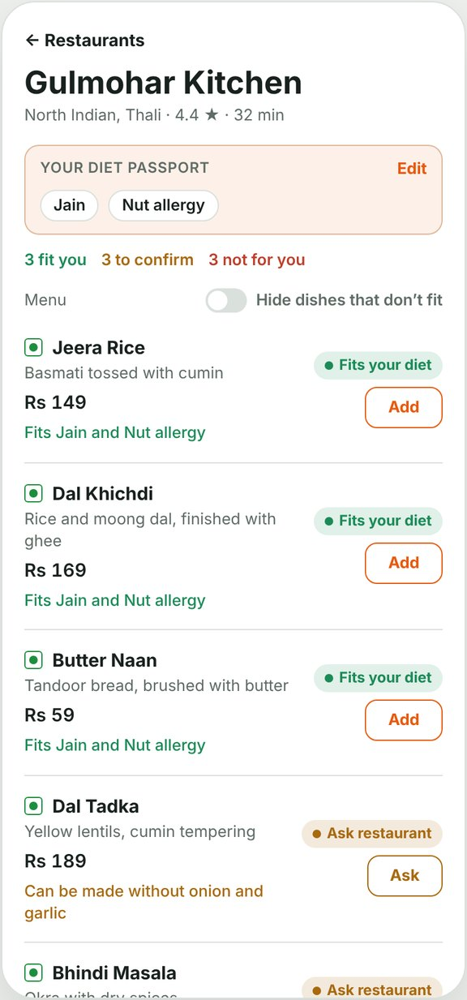
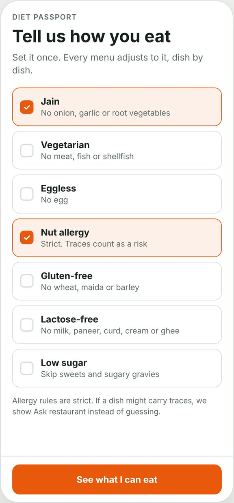
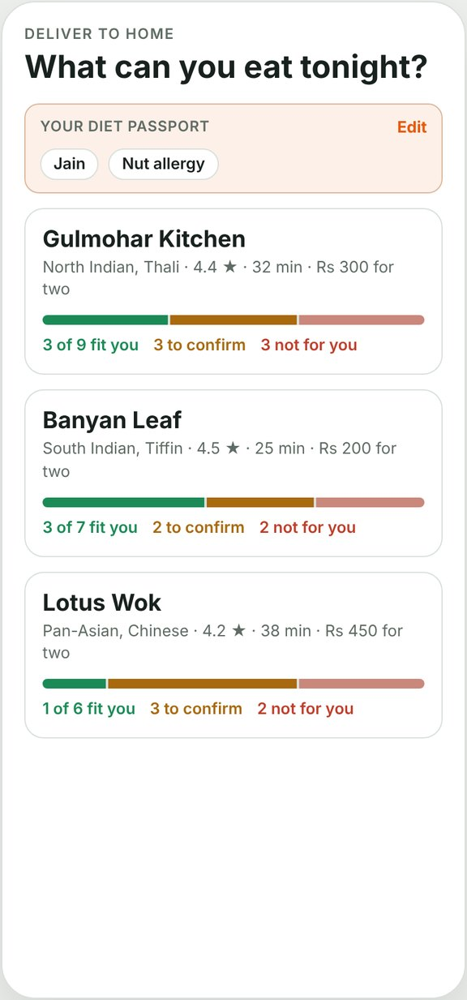
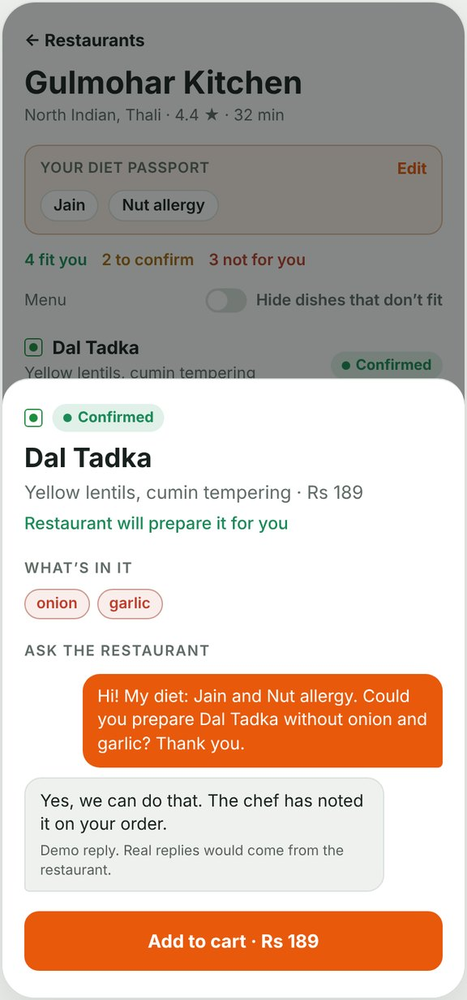
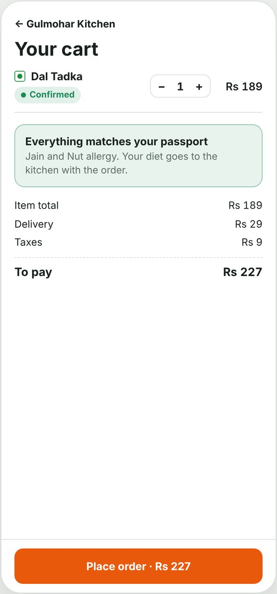
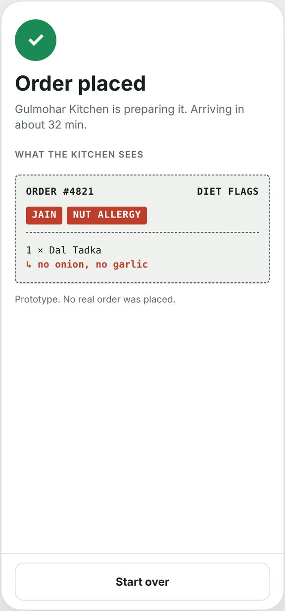

Set how you eat once. Every restaurant menu then shows, dish by dish, what fits you, what to ask the kitchen first, and what to skip. The kitchen gets a ticket that carries your diet with the order.

Who it is for, what goes wrong today, what the feature does, and why it is worth building.
People who follow a diet they cannot bend on.
These customers open dishes one by one and guess about onion, garlic, cashew gravy or a shared fryer. Then they call or message the restaurant, or type a note that kitchens often miss.
Food allergies carry real health risk, and a dish that does not match someone’s diet is a failed order. Clear answers before checkout mean fewer wrong deliveries, fewer refunds and customers who keep ordering from a category they were wary of.
Screens from the working prototype, using Gulmohar Kitchen as the example restaurant.

1Pick the rules you follow. Jain and nut allergy are preselected in the demo.

2Each restaurant shows how many dishes fit, need a check, or are out.
Fitting dishes come first. Each one says why, in plain words.

4A ready-made question goes to the kitchen. A yes turns the dish green.

5Checkout flags anything that conflicts, and blocks it until you remove it.

6The ticket carries diet flags and per-dish notes, so nothing hangs on a free-text box.
No ingredient on the dish conflicts with anything in your passport.
The dish is usually fine after a change, or may carry traces. The app asks the kitchen so you do not have to.
The conflict is part of the recipe and cannot be removed. Skip it, or pick another dish.
Allergy rules are strict. If a dish might carry traces, it shows Ask restaurant instead of guessing.